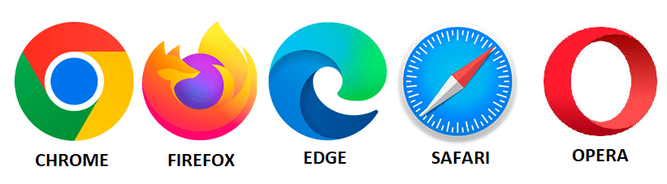

NAVEGADORES
Navegar en Internet es una actividad que realizamos diariamente. Para visitar una página web, necesitamos de los navegadores.
Navegar en Internet es una actividad que realizamos diariamente. Para visitar una página web, necesitamos de los navegadores.
Los principales navegadores son:

Características de un navegador
La mayoría de navegadores tienen interfaces similares y presentan funcionalidades iguales o parecidas.
La barra direcciones
Todos los navegadores tienen en la parte superior un espacio para escribir la URL o dirección de la página web que vamos a visitar.
¿Qué significan las letras WWW que están al principio de una dirección web? . En inglés: World Wide Web, se refiere a un protocolo para acceder a internet.
En la barra de direcciones también se pueden realizar búsquedas en la web.
Seguridad
Un navegador seguro permite identificar, mediante filtros, si un sitio web es fraudulento, si contiene software malintencionado o ha sido simulado para cometer suplantación de identidad (phishing). Este no avisará antes de descargar archivos contagiados con algún virus informático, no obstante, es recomendable tener instalado un buen programa antivirus.
Privacidad
La mayoría casi todos los navegadores nos permiten navegar de forma incógnita y así no ser rastreado por los sitios o las páginas web que visitamos.
Cookies
Cuando accedemos por primera vez a una página web, nos aparece una ventana emergente para darnos la opción de configurar las cookies. Las cookies son ficheros que envían las páginas web que visitamos a nuestro ordenador con el fin de identificar nuestro PC y registrar las acciones que realizamos mientras navegamos en ellas.
Ventajas: Lo más importante de las cookies son sus funciones para recordar accesos. Si no existieran, cada vez que entras en una página tendrías que iniciar sesión en ella. También son útiles, por ejemplo, para recordar, después de irte de la página de una tienda online, los productos que habías introducido en la cesta de la compra.
Inconvenientes: La parte mala de las cookies es que pueden conocer la información sobre tus hábitos de navegación, algo que pueden utilizar terceros para enviarte información relacionada con tus intereses, pero también para identificarte como usuario según las páginas que visitas.
Al entrar en un sitio web, este está obligado a avisarnos y a preguntarnos qué tipo de cookies queremos instalar, debido a la normativa que regula la protección de los datos de los ciudadanos que viven en la Unión Europea (la GDPR).
¿Qué tipos de cookies existen?
Según la duración:
Según a quien pertenezcan:
Cuando entramos en un navegador y nos preguntan si queremos configurar las cookies, normalmente podremos activar o desactivar grupos de cookies dependiendo de sus finalidades.
Hay un tipo de cookies que nunca vamos a poder desactivar: las técnicas o necesarias. Son aquellas que sirven para optimizar el funcionamiento de la web.
También hay cookies de preferencias o de personalización, que almacenan nuestras preferencias y configuraciones en las webs a las que visitamos. Por ejemplo, permiten recordar nuestro idioma predeterminado, qué clase de navegador usamos,....
Las cookies de rendimiento y análisis almacenan información de las acciones que llevas a cabo en la página que visitas. Por ejemplo, registran los enlaces en los que sueles hacer clic más a menudo. El objetivo es tener estadísticas masivas mediante las cuales conocer qué elementos se usan más o dónde puede haber problemas y errores.
Y por último, están las cookies publicitarias o de marketing, que se encargan de gestionar la publicidad que se incluye en las páginas webs. Al instalarlas, estas cookies analizan en qué páginas entras o qué búsquedas realizas para recopilar información sobre tus gustos e intereses. De esta manera, elaboran perfiles que pueden vender o ceder a anunciantes para mostrarte publicidad que pueda ser relevante.
¿Qué cookies podemos configurar?
A través de la ventana emergente de configuración de cookies que nos aparece al acceder a la página, podremos desactivar algunos tipos de cookies.
Además, también podemos borrarlas de nuestro dispositivo a través de las opciones de los navegadores, ya sea en el PC o en el móvil. Al hacerlo, tendremos que volver a iniciar sesión si queremos entrar en algún sitio. También se perderán las preferencias y será necesario volver a configurar las cookies en todas las webs.
Si desactivamos las cookies publicitarias para una página, no podrá recopilar información sobre nuestros intereses y gustos.
Si desactivamos las cookies de análisis, los responsables de las webs tampoco podrán registrar lo que haces en ellas para investigar qué elementos son más efectivos o más utilizados en su web, o dónde puede haber posibles problemas.
Y si desactivamos las cookies de preferencias, los posibles cambios que hagamos en la configuración de una web no se recordarán. Si vamos a una tienda online y seleccionamos el idioma español, tendremos que volver a configurarlo las próximas veces que volvamos a acceder. Y así con el resto de información de configuración que recopile cada web con sus cookies.
En términos de privacidad, hemos de tener en cuenta que, cuantas menos cookies activemos, más privacidad tendremos a la hora de navegar por internet, pero, a cambio, menos personalización encontraremos al navegar. Así pues, la clave está en que encontremos un equilibrio personal entre privacidad y experiencia.
Obra publicada con Licencia Creative Commons Reconocimiento Compartir igual 4.0